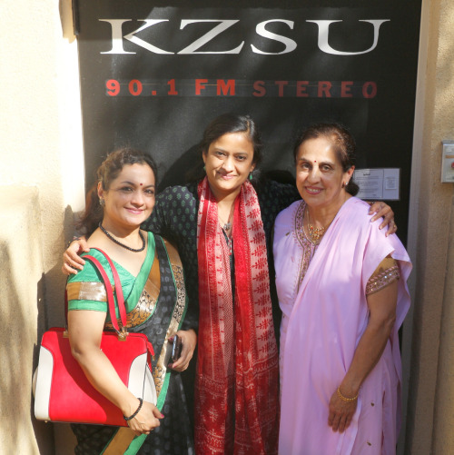

Nritya Yoga - Combining The Ancient Art of Bharatanatyam and Yoga: In conversation with Dr. Swati Daithankar and Smt. Vasanthi Bhat
We are living in a world in which either we are striving for something which we don’t have or destroying what we have in order to gain something else. But in the end, we realize that we all are looking for shaanti or peace. Somehow, most of us look outside to seek this fulfillment. I believe that the combination of art and exercise and relating to the world through dance, music, pranayam, exercise, one can attain what he or she is striving for. In this Chaitime show, we talk to Dr. Swati Daithankar, an accomplished internationally acclaimed Bharatanatyam dancer, professor and performer. Along with her, we also have Smt. Vasanthi Bhat on the show. She is an internationally recognized yoga teacher, author, publisher, and producer, who has been serving the bay area for last 40 years and so with her knowledge of Yoga. Both, Dr. Daithankar and Smt. Bhat came together to produce an unique show Nritya Yoga which was presented to bay area audience on Aug. 30, 2015.
Smt. Bhat has an upcoming event, Instant Rejuvenation with Yoga!, Oct 3, 2015. Dr. Daithankar will be back to Bay area with her dance drama, Tejo Nidhi, on May 22, 2016. This dance drama is based on the thoughts and teachings of Swami Vivekananda and is a production of Swami Vivekananda Kendra KanyaKumari.
Dr. Swati Daithankar is a double graduate from the University of Bombay in English literature as well as Bharatanatyam. She has been honored with the prestigious Nageshwar Rao Award and the National Scholarship for Dance. She has received Nritya Alankar from Akhil Bhartiya Gandharva Mahavidyalaya Mandal, and the National Fellowship for Yoga and Bharatanatyam from Govt. of India. The prestigious Sangeetacharya was conferred on her for her research on the subject Nrityayoga. She has performed in major dance Festivals in India and abroad; namely Europe, USA and Singapore. She is a graded television dancer and has released many dance albums. She is a recognized faculty of dance in Gandharva Mahavidyalaya, Tilak Maharashtra Vidyapeeth and Pune University. Nupurnad Academy of Music and Dance is her brainchild; which is successfully pursuing the horizons of classical dance, namely Bharatanatyam, Smt. Vasanti Bhat is an internationally recognized yoga teacher, founder, and director of Vasantha Yoga, San Jose, CA. She has been teaching Hatha Yoga and Meditation for over 40 years. Her caring, gentle, yet powerful yoga style attracts people of ages and from all walks of life. She is the author and publisher of 3 books and producer of 4 CDs and 18 DVDs on Meditation and Yoga Practice. Notable among the honors she has received are, the Human Relations Award and Arts and Humanities for her exceptional services to the Santa Clara County community. She was an honorary guest speaker at the International Conference on World Peace in Ahmadabad, India. She has done numerous seminars/workshops in the U.S.A., and other countries.